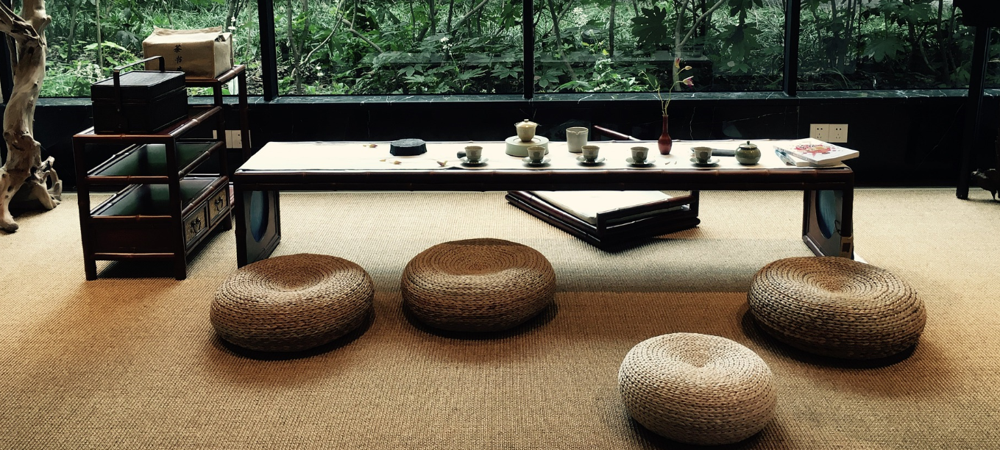

ONSIL STORY
사진온실
개인경관 - 個人鏡觀
개인을 경험하는 거울 셀프 사진관
거울 경, 볼 관을 사용하여 거울을 통해 개인을
바라보고 경험하는 사진관이라는 이중적
의미가 있습니다
특허 : 제10-2071948호
Half Mirror 거울 셀프사진관
"거울에 비친 모습 그대로 사진을 찍을 수 있다면 어떨까?"
‘개인경관-個人鏡觀’은 거울 속 마주한 자신에게 관심을 기울이며, 개인의 본질과
가능성을 경험합니다. 촬영 순간 카메라를 보고 있다면 자기 모습을 보지 못하는
모순을 해결해 특허 등록했습니다.
거울을 통해 자신 또는 사랑하는 사람의 눈을 보며, 마주 보고 대화하듯 사진을
찍을 수 있습니다. 화가들이 자화상을 그리기 위해 거울을 이용했던 것처럼
당신만의 고유한 분위기를 담아보세요.
특허 등록 : 제10-2071948호
Meet Myself
‘개인경관-個人鏡觀’ 거울로 경험의 시간이 담긴 사진에 ‘MEET MYSELF’
스스로 질문하고 답을 찾아보세요.
사진을 전공한 사진정원사가 1:1 보정을 거쳐오랜 시간 보존할 수 있도록 미술품
보존에 사용하는 중성 아트지(한지)에 프린트합니다. 중성 로열 뮤지엄 보드지,
고서적 수선 테이프, Acid Free(산성 성분이 없는) 포토 코너 등 사진을 둘러싼
모든 재료를 오랜 시간이 지나도 보존할 수 있도록 신중하게 선택했습니다
SAZINONSIL의 거울을 통한 경험 디자인과 철학은 세계 3대 디자인 어워드인,
iF 디자인 어워드 2021년 브랜딩 수상했습니다.
사진정원사의 편지
사진에 관한 노트 『밝은 방』에서 롤랑 바르트는 ‘사랑과 죽음’의 관점에서 사진 특수성
‘그것이-존재-했음’을 도출합니다. 사진을 정리하면서 어머니의 어린 시절 모습이 담긴
‘온실 사진’에서 그리운 모습을 되찾고 사진의 본질과 마주했습니다. 과거는 되돌릴 수
없지만 사진만이 되찾고 싶은 ‘무엇’으로써 지나간 시간을 우리 눈앞에 보여주는
마술 같은 환각을 선물합니다.
사진은 인간의 마음의 자국이고, 삶의 거울이며, 적막한 순간 우리 손안에 쥘 수 있는
응고된기억이라 말했던 바르트는 사진이 삶의 나아갈 방 향을 제시해 준다고 보았습니다.
‘사진온실’은 ‘개인경관 個人鏡觀’ 거울 (경), 볼 (관)을 사용하여 거울을 통해 개인을
바라보고경험하는 사진관이라는 이중적 의미가 있습니다. 사진사, 사진기를 보지 않고
거울 속 마주한 자신에게 관심을 기울이며 존재론적 가치를 발견합니다. 나와 마주한
시간이 담긴 사진을 화초를 보살피듯 매일 눈길을 주고, ‘MEET MYSELF’ 스스로 질문하고
답을 찾는 과정을 통해 개인의 본질과 가능성을 찾을 수 있었으면 합니다.
사진정원사로부터